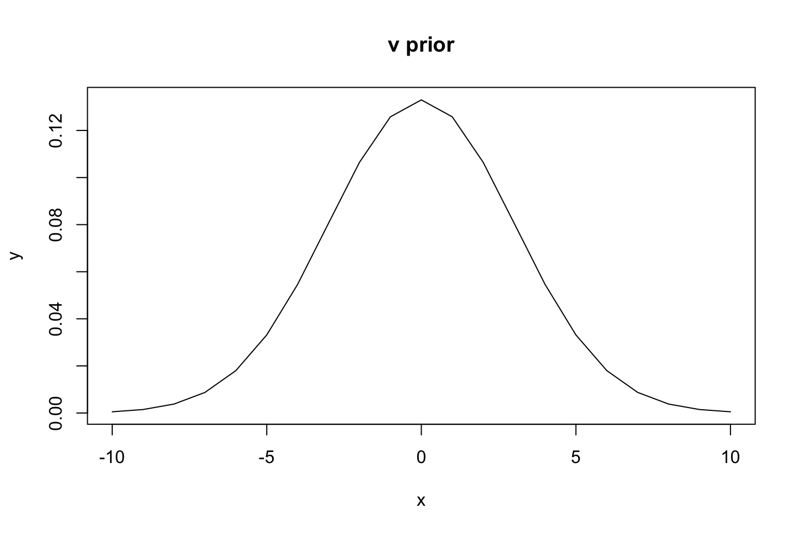

15 Ch 14 - Adventures in Covariance
15.1 Ch 14.3 - Instruments and causal designs
Sometimes it may not be possible to close all backdoors in a DAG. There are different approaches to this, the most famous is first represented and then alternatives are presented.
15.1.1 Instrumental variables
Althoguh in rare occations it may be possible to specify the model otherwise and include an instrumental variable to enable correct inferrential properties of a model.
If the model is misspecified, then there is a possibility of the coefficients for the model parameters being wrong. Hence inference bbeing done on this model will be wrong. Thus empasizing the importance of evaluating the DAGs
Let say we have the following DAG.
We see that U is an observed variable and has a forking property, where it influence both W and E. Although it is unobserved hence we cannot include it in the model.
Hence there is a backdoor! (confounding effect). We may be able to solve this with an instrumental variable. For an instrumental variable to be valid it needs to fulfill the following properties.
He makes an example of regressing education on wage, where we also may expect that lazyness is a deterministic factor, although we cannot observe that, so by including age we also indicrectly include lazyness as high lazyness may mean less education but also on lower wages. Thus, we have opened a backdoor and sit with a confounding effect. The following section elaborates on how an instrument can be added.
- Must be independent of the unobserved U, hence Q independent of U
- Must not be dependent of the observed variable that we want to make inference on.
- Q (instrumental variable) cannot influence the target variable, as that would create a babckdoor.
Code example, we are going to simulate some data so we know the relations.
library(dagitty)
library(rethinking)
dag <- dagitty( "dag {
U [unobserved]
E [exposure]
W [outcome]
U -> E
U -> W
E -> W
}"
)
drawdag(dag)We want to measure E’s effect on W, although by including E we will also open the backdoor to U, which we cannot control for as it is unknown. Thus we are going to add the instrument variable Q.
We simulate the effect so Education correltion on wages is 0.
set.seed(73)
N <- 500
U_sim <- rnorm( N )
Q_sim <- sample( 1:4 , size=N , replace=TRUE )
E_sim <- rnorm( N , U_sim + Q_sim ) #E = education
W_sim <- rnorm( N , U_sim + 0*E_sim ) #0 * E_sim = 500 zeros, W = wages
dat_sim <- list(
W=standardize(W_sim) ,
E=standardize(E_sim) ,
Q=standardize(Q_sim) )Adding Q in the dag.
library(dagitty)
library(rethinking)
dag <- dagitty( "dag {
U [unobserved]
E [exposure]
W [outcome]
U -> E
U -> W
E -> W
Q -> E
}"
)
drawdag(dag)We see that Q and U are completely unrelated to other variables. E is based on U and Q and and W is based on U.
The following presents three types of models, two wrong (misuses) and one good solution:
15.1.1.1 1. Only including E (we add confounding effect sideeffect of E)
m14.4 <- ulam(
alist(
W ~ dnorm( mu , sigma ),
mu <- aW + bEW*E, #By adding E also U is leaking unwanted information
aW ~ dnorm( 0 , 0.2 ),
bEW ~ dnorm( 0 , 0.5 ),
sigma ~ dexp( 1 )
) , data=dat_sim , chains=4 , cores=4)precis(m14.4)
|
|
|
|
|
|
We see that U is ruining the inference. Thus we might report that Education is increasing wages. Although it is in fact wrong. In this simulation we set the effect of E on W to be around 0.
15.1.1.2 2. Adding instrument Q (the wrong way)
m14.5 <- ulam(
alist(
W ~ dnorm( mu , sigma ),
mu <- aW + bEW*E + bQW*Q, #Add the effect of Q
aW ~ dnorm( 0 , 0.2 ),
bEW ~ dnorm( 0 , 0.5 ),
bQW ~ dnorm( 0 , 0.5 ),
sigma ~ dexp( 1 )
) , data=dat_sim , chains=4 , cores=4 )## Running /Library/Frameworks/R.framework/Resources/bin/R CMD SHLIB foo.c
## clang -I"/Library/Frameworks/R.framework/Resources/include" -DNDEBUG -I"/Library/Frameworks/R.framework/Versions/4.0/Resources/library/Rcpp/include/" -I"/Library/Frameworks/R.framework/Versions/4.0/Resources/library/RcppEigen/include/" -I"/Library/Frameworks/R.framework/Versions/4.0/Resources/library/RcppEigen/include/unsupported" -I"/Library/Frameworks/R.framework/Versions/4.0/Resources/library/BH/include" -I"/Library/Frameworks/R.framework/Versions/4.0/Resources/library/StanHeaders/include/src/" -I"/Library/Frameworks/R.framework/Versions/4.0/Resources/library/StanHeaders/include/" -I"/Library/Frameworks/R.framework/Versions/4.0/Resources/library/RcppParallel/include/" -I"/Library/Frameworks/R.framework/Versions/4.0/Resources/library/rstan/include" -DEIGEN_NO_DEBUG -DBOOST_DISABLE_ASSERTS -DBOOST_PENDING_INTEGER_LOG2_HPP -DSTAN_THREADS -DBOOST_NO_AUTO_PTR -include '/Library/Frameworks/R.framework/Versions/4.0/Resources/library/StanHeaders/include/stan/math/prim/mat/fun/Eigen.hpp' -D_REENTRANT -DRCPP_PARALLEL_USE_TBB=1 -I/usr/local/include -fPIC -Wall -g -O2 -c foo.c -o foo.o
## In file included from <built-in>:1:
## In file included from /Library/Frameworks/R.framework/Versions/4.0/Resources/library/StanHeaders/include/stan/math/prim/mat/fun/Eigen.hpp:13:
## In file included from /Library/Frameworks/R.framework/Versions/4.0/Resources/library/RcppEigen/include/Eigen/Dense:1:
## In file included from /Library/Frameworks/R.framework/Versions/4.0/Resources/library/RcppEigen/include/Eigen/Core:88:
## /Library/Frameworks/R.framework/Versions/4.0/Resources/library/RcppEigen/include/Eigen/src/Core/util/Macros.h:628:1: error: unknown type name 'namespace'
## namespace Eigen {
## ^
## /Library/Frameworks/R.framework/Versions/4.0/Resources/library/RcppEigen/include/Eigen/src/Core/util/Macros.h:628:16: error: expected ';' after top level declarator
## namespace Eigen {
## ^
## ;
## In file included from <built-in>:1:
## In file included from /Library/Frameworks/R.framework/Versions/4.0/Resources/library/StanHeaders/include/stan/math/prim/mat/fun/Eigen.hpp:13:
## In file included from /Library/Frameworks/R.framework/Versions/4.0/Resources/library/RcppEigen/include/Eigen/Dense:1:
## /Library/Frameworks/R.framework/Versions/4.0/Resources/library/RcppEigen/include/Eigen/Core:96:10: fatal error: 'complex' file not found
## #include <complex>
## ^~~~~~~~~
## 3 errors generated.
## make: *** [foo.o] Error 1precis( m14.5 )
|
|
|
|
|
|
We see that by simply adding the effect of Q, we are still having a back door and this makes the effect of E on W look even higher, THAT IS WRONG!
15.1.1.3 3. Correct use of the instrument variable
The answer is to go multi level (create a generative model). This implies writing 4 functions (4 sub models)
\[ \text{1. How wages are caused by education and U} \\ W_i \sim Normal(\mu_{w,i},\sigma_w) \\ \mu_{w,i} = \alpha_w + \beta_{EW}E_i + U_i \\ \text{2. How education levels are caused by quarter of birth Q} \\ E_i \sim Normal(\mu_{E,i},\sigma_E) \\ \mu_{E,i} = \alpha_E + \beta_{QE}Q_i+U_i \\ \text{3. The mode for Q (unif. dist.)} \\ Q_I \sim Categorical([0.25,0.25,0.25,0.25]) \\ \text{4. Specifying distribution for Q} \\ U_i \sim Normal(0,1) \]
Notice that U could have had another distribution.
Now we can define this as a statistical model, defining the joint distribution of wage and education. This basically means that each W and E get their own linear models (y = a + bx) as we have two mean values.
\[ \begin{pmatrix} W_i \\ E_i \end{pmatrix} \sim MVNormal( \begin{pmatrix} \mu_{w,i} \\ \mu_{E,i} \end{pmatrix} , S ) \\ \mu_{w,i} = \alpha_W + \beta_{EW}E_i \\ \mu_{E,i} = \alpha_E + \beta_{QE}Q_i \]
Notice that we have:
- A linear model with education consists of some intercept and a slope for the education
- A linear model for the quarter of birth (instrument variable)
Thus we estimate two linear models and we deal with the confound by doing the MVNormal, where S (the correlation parameter) gives information about how strong the confound is. Thus we just care about the correlation matrix so we can adjust the effect of E according to the effect of Q
m14.6 <- ulam(
alist(
c(W,E) ~ multi_normal( c(muW,muE) , Rho , Sigma ),
muW <- aW + bEW*E, #Mean wage
muE <- aE + bQE*Q, #Mean education
c(aW,aE) ~ normal( 0 , 0.2 ), #
c(bEW,bQE) ~ normal( 0 , 0.5 ),
Rho ~ lkj_corr( 2 ),
Sigma ~ exponential( 1 )
), data=dat_sim , chains=4 , cores=4 )## Running /Library/Frameworks/R.framework/Resources/bin/R CMD SHLIB foo.c
## clang -I"/Library/Frameworks/R.framework/Resources/include" -DNDEBUG -I"/Library/Frameworks/R.framework/Versions/4.0/Resources/library/Rcpp/include/" -I"/Library/Frameworks/R.framework/Versions/4.0/Resources/library/RcppEigen/include/" -I"/Library/Frameworks/R.framework/Versions/4.0/Resources/library/RcppEigen/include/unsupported" -I"/Library/Frameworks/R.framework/Versions/4.0/Resources/library/BH/include" -I"/Library/Frameworks/R.framework/Versions/4.0/Resources/library/StanHeaders/include/src/" -I"/Library/Frameworks/R.framework/Versions/4.0/Resources/library/StanHeaders/include/" -I"/Library/Frameworks/R.framework/Versions/4.0/Resources/library/RcppParallel/include/" -I"/Library/Frameworks/R.framework/Versions/4.0/Resources/library/rstan/include" -DEIGEN_NO_DEBUG -DBOOST_DISABLE_ASSERTS -DBOOST_PENDING_INTEGER_LOG2_HPP -DSTAN_THREADS -DBOOST_NO_AUTO_PTR -include '/Library/Frameworks/R.framework/Versions/4.0/Resources/library/StanHeaders/include/stan/math/prim/mat/fun/Eigen.hpp' -D_REENTRANT -DRCPP_PARALLEL_USE_TBB=1 -I/usr/local/include -fPIC -Wall -g -O2 -c foo.c -o foo.o
## In file included from <built-in>:1:
## In file included from /Library/Frameworks/R.framework/Versions/4.0/Resources/library/StanHeaders/include/stan/math/prim/mat/fun/Eigen.hpp:13:
## In file included from /Library/Frameworks/R.framework/Versions/4.0/Resources/library/RcppEigen/include/Eigen/Dense:1:
## In file included from /Library/Frameworks/R.framework/Versions/4.0/Resources/library/RcppEigen/include/Eigen/Core:88:
## /Library/Frameworks/R.framework/Versions/4.0/Resources/library/RcppEigen/include/Eigen/src/Core/util/Macros.h:628:1: error: unknown type name 'namespace'
## namespace Eigen {
## ^
## /Library/Frameworks/R.framework/Versions/4.0/Resources/library/RcppEigen/include/Eigen/src/Core/util/Macros.h:628:16: error: expected ';' after top level declarator
## namespace Eigen {
## ^
## ;
## In file included from <built-in>:1:
## In file included from /Library/Frameworks/R.framework/Versions/4.0/Resources/library/StanHeaders/include/stan/math/prim/mat/fun/Eigen.hpp:13:
## In file included from /Library/Frameworks/R.framework/Versions/4.0/Resources/library/RcppEigen/include/Eigen/Dense:1:
## /Library/Frameworks/R.framework/Versions/4.0/Resources/library/RcppEigen/include/Eigen/Core:96:10: fatal error: 'complex' file not found
## #include <complex>
## ^~~~~~~~~
## 3 errors generated.
## make: *** [foo.o] Error 1precis( m14.6 , depth=3 )
|
|
|
|
|
|
Now we see that the slope for E is 0 (and the compatibility intercals on both sides of 0), while the interaction between E and Q has all the effect. Thus we have got rid of the confounding variable (unknown U). Now there are also a bunch of other parameters, but the slopes for E and QE are the most important.
Key takeaway: in general it is not possibile to statistically prove if a variable is a good instrument. This is where domain knowledge is relevant!!
Notice that it is almost impossible to know the ground truth. Thus emphasizing that we must construct a meaningful DAG, in which we must reason for and believe in!!
15.1.2 Other designs
15.1.2.1 Front-Door Criterion
Lets suppose we have a scenario where we want to measure X effect on Y, although we have an unknown U, that is a confounding effect, as it affects both X and Y, hence exposure and outcome.
library(dagitty)
library(rethinking)
dag <- dagitty( "dag {
U [unobserved]
X [exposure]
Y [outcome]
U -> X
U -> Y
X -> Z
Z -> Y
}"
)
Another way to solve this is find a Front-door criterion, Z in this example, which is independent of U, as when only Z is introduced the effect of U is not included in the model. WHY? Recall that we have a pipe from X to Y and when we condition on Z we close the relationship between X and Y and thus also U.
15.1.2.2 Regression discontinuity (RDD)
The example of regressing academic reward on future success, where many unobserved variables occur. See the example on page 461.
15.2 (Gaussian Processes) Continuous categories and the Gaussian process
This section is about including continuous variables, as up until now we have only been working with unordered categorical variables. Thus this also allows for continuous varying effects.
This is used to measure similarity bbased on a continuous scale, where we up until now only have looked at similarity in unordered categories such as tadpoles.
15.2.1 Example: Spatial autocorrelation in Oceanic tools
This example use the tool counts for a set of islands and also includes latitude and longitude data to regress population and tool counts with respect to their geological position.
15.2.1.1 Loading data + defining model
# load the distance matrix
library(rethinking)
data(islandsDistMatrix)
# display (measured in thousands of km)
Dmat <- islandsDistMatrix
colnames(Dmat) <- c("Ml","Ti","SC","Ya","Fi","Tr","Ch","Mn","To","Ha")
round(Dmat,1)## Ml Ti SC Ya Fi Tr Ch Mn To Ha
## Malekula 0.0 0.5 0.6 4.4 1.2 2.0 3.2 2.8 1.9 5.7
## Tikopia 0.5 0.0 0.3 4.2 1.2 2.0 2.9 2.7 2.0 5.3
## Santa Cruz 0.6 0.3 0.0 3.9 1.6 1.7 2.6 2.4 2.3 5.4
## Yap 4.4 4.2 3.9 0.0 5.4 2.5 1.6 1.6 6.1 7.2
## Lau Fiji 1.2 1.2 1.6 5.4 0.0 3.2 4.0 3.9 0.8 4.9
## Trobriand 2.0 2.0 1.7 2.5 3.2 0.0 1.8 0.8 3.9 6.7
## Chuuk 3.2 2.9 2.6 1.6 4.0 1.8 0.0 1.2 4.8 5.8
## Manus 2.8 2.7 2.4 1.6 3.9 0.8 1.2 0.0 4.6 6.7
## Tonga 1.9 2.0 2.3 6.1 0.8 3.9 4.8 4.6 0.0 5.0
## Hawaii 5.7 5.3 5.4 7.2 4.9 6.7 5.8 6.7 5.0 0.0We have a distance matrix and we see the flight distance between each island.
Notice that we want to use distance as a similarity in technology exposure.
We can define the model for number of tools with:
\[ T_I \sim Poisson(\lambda_i)\\ \lambda_i = \alpha P_i^\beta/\gamma \]
Now we can adjust lambda with a varying intercept for each society. We also want the value to always be positive, hence we add exponential for each society. We add the index for each society, this will yield a multiple intercept model.
Thus the modified formula:
\[ T_I \sim Poisson(\lambda_i)\\ \lambda_i = exp(k_{societry[i]})\alpha P_i^\beta/\gamma \]
Recall that exp(0) = 1
Thus we multply the original contents with the exponential category k. Thus we see that \(k_{societry[i]\) is the varting intercept.
We need to define a prior for the varying intercepts, that is done by:
\[ \text{Prior for the varying intercepts:} \\ \begin{pmatrix} k_1 \\ k_2 \\ k_3 \\ ... \\ k_10 \end{pmatrix} \sim MVNormal \begin{pmatrix} \begin{pmatrix} 0 \\ 0 \\ 0 \\ ... \\ 0 \end{pmatrix} ,K \end{pmatrix} \\ \text{Covariance matrix K:} \\ K_{ij} = \eta^2 exp(-\rho^2D^2_{ij})+\delta_{ij}\sigma^2 \]
We see that:
First expression is a 10-dimensional gaussian prior for the intercepts. There are 10 societies and thus one intercept for each society.
Notice that \(K_{ij}\) is a matrix, as we have two variables. Thus the \(K_{ij}\) is able to identify a correlation between two variables (islands). Ultimately it creates a matrix including numbers for the equation \(K_{ij}\), elaborated a bit in the following.
the K parameter is defined by three parameters - eta, rho and sigma. And the purpose of K is to set the covariance between societies as the distances between them change. The K parameter can be separated into three parts:
- \(exp(-\rho^2D^2_{ij})\) Shape of K.
- \(D^2_{ij}\) - It is the squared distance between i and j.
- \(\eta^2\) - The maximum covariance between any two societies i and j.
- \(\delta_{ij}\sigma^2\) - The additional variance, this can be turned on and off. where sigma squared is simply just the variance where delta is able to turn it on and off. (for some reason this we do not have to care too much abbout)
More on the first part:
Shape of K
- The shape of K is \(exp(-\rho^2D^2_{ij})\), where \(D^2_{ij}\) is the distance between the i’th and j’th object (between two societies). We simply see that the larger the distance the lower is the correlation among the two islands. Two toy examples where rho is fixed:
options(scipen = 999)
rho = 0.1
D = 10 #D = distance
exp(-rho^2*D^2)## [1] 0.3678794rho = 0.1
D = 1 #two islands 10 times closer than the previous example
exp(-rho^2*D^2)## [1] 0.9900498We simply see that the closer the islands the larger the expected similarity.
Parameter \(\rho\): The rate of decline. When it is large, the covariance declines rapidly with squared distance.
rho = 0.1
D = 1 #two islands 10 times closer than the previous example
exp(-rho^2*D^2)
rho = 1
D = 1 #two islands 10 times closer than the previous example
exp(-rho^2*D^2)## [1] 0.9900498
## [1] 0.3678794Now we see that the smaller rho (declining similarity) that larger is the similarity given that distance is fixed.
Why square the distance???: you don’t have to, they just do that.
We can plot two examples where one is squared and one is just the distance:
# linear
curve( exp(-1*x) , from=0 , to=4 , lty=2 ,
xlab="distance" , ylab="correlation" )
# squared
curve( exp(-1*x^2) , add=TRUE )
mtext("Solid = squared distances, striped = linear distances.")Now we see that correlation decrease as distance increase between islands. Thus naturally we see that the islands correlation is 1 to itself and then declines from there.
Notice that this i kind of a half normal distribution.
Notice that the linear has some kind of linear decrease, where the squared example takes a while before decreasing, hence we do account for close islands to be collaborating, while the linear model will say that you quickly or almost immediately is different even from neighboring islands!
15.2.1.2 The full model
\[ T_i \sim Poisson(\lambda_i) \\ \lambda_i = exp(k_{societry[i]})\alpha P_i^\beta/\gamma \\ k \sim MVNormal(0,...,0),K) \\ K_{ij} = \eta^2 exp(-\rho^2D^2_{ij})+\delta_{ij}\sigma^2\\ \text{The priors:} \\ \alpha \sim Exponential(1) \\ \beta \sim Exponential(1) \\ \eta^2 \sim Exponential(2) \\ \rho^2 \sim Exponential(0.5) \]
Eta and rho must be positive for this example, hence we use the exponential distribution.
k is a matrix based on the multivariate normal distribution, where,
Each K element is defined by a certain distribution.
Eta and rho squared does not have to be squared, but they are
Notice that the code includes GPL2, that is simply Gaussian Process Prior for squared distance
data(Kline2) # load the ordinary data, now with coordinates
d <- Kline2
d$society <- 1:10 # index observations
dat_list <- list(
T = d$total_tools,
P = d$population,
society = d$society,
Dmat=islandsDistMatrix )
m14.8 <- ulam(
alist(
T ~ dpois(lambda),
lambda <- (a*P^b/g)*exp(k[society]),
vector[10]:k ~ multi_normal( 0 , SIGMA ),
matrix[10,10]:SIGMA <- cov_GPL2( Dmat , etasq , rhosq , 0.01 ),
c(a,b,g) ~ dexp( 1 ),
etasq ~ dexp( 2 ), #for eta squared
rhosq ~ dexp( 0.5 ) #for rho squared
), data=dat_list , chains=4 , cores=4 , iter=2000 )## Running /Library/Frameworks/R.framework/Resources/bin/R CMD SHLIB foo.c
## clang -I"/Library/Frameworks/R.framework/Resources/include" -DNDEBUG -I"/Library/Frameworks/R.framework/Versions/4.0/Resources/library/Rcpp/include/" -I"/Library/Frameworks/R.framework/Versions/4.0/Resources/library/RcppEigen/include/" -I"/Library/Frameworks/R.framework/Versions/4.0/Resources/library/RcppEigen/include/unsupported" -I"/Library/Frameworks/R.framework/Versions/4.0/Resources/library/BH/include" -I"/Library/Frameworks/R.framework/Versions/4.0/Resources/library/StanHeaders/include/src/" -I"/Library/Frameworks/R.framework/Versions/4.0/Resources/library/StanHeaders/include/" -I"/Library/Frameworks/R.framework/Versions/4.0/Resources/library/RcppParallel/include/" -I"/Library/Frameworks/R.framework/Versions/4.0/Resources/library/rstan/include" -DEIGEN_NO_DEBUG -DBOOST_DISABLE_ASSERTS -DBOOST_PENDING_INTEGER_LOG2_HPP -DSTAN_THREADS -DBOOST_NO_AUTO_PTR -include '/Library/Frameworks/R.framework/Versions/4.0/Resources/library/StanHeaders/include/stan/math/prim/mat/fun/Eigen.hpp' -D_REENTRANT -DRCPP_PARALLEL_USE_TBB=1 -I/usr/local/include -fPIC -Wall -g -O2 -c foo.c -o foo.o
## In file included from <built-in>:1:
## In file included from /Library/Frameworks/R.framework/Versions/4.0/Resources/library/StanHeaders/include/stan/math/prim/mat/fun/Eigen.hpp:13:
## In file included from /Library/Frameworks/R.framework/Versions/4.0/Resources/library/RcppEigen/include/Eigen/Dense:1:
## In file included from /Library/Frameworks/R.framework/Versions/4.0/Resources/library/RcppEigen/include/Eigen/Core:88:
## /Library/Frameworks/R.framework/Versions/4.0/Resources/library/RcppEigen/include/Eigen/src/Core/util/Macros.h:628:1: error: unknown type name 'namespace'
## namespace Eigen {
## ^
## /Library/Frameworks/R.framework/Versions/4.0/Resources/library/RcppEigen/include/Eigen/src/Core/util/Macros.h:628:16: error: expected ';' after top level declarator
## namespace Eigen {
## ^
## ;
## In file included from <built-in>:1:
## In file included from /Library/Frameworks/R.framework/Versions/4.0/Resources/library/StanHeaders/include/stan/math/prim/mat/fun/Eigen.hpp:13:
## In file included from /Library/Frameworks/R.framework/Versions/4.0/Resources/library/RcppEigen/include/Eigen/Dense:1:
## /Library/Frameworks/R.framework/Versions/4.0/Resources/library/RcppEigen/include/Eigen/Core:96:10: fatal error: 'complex' file not found
## #include <complex>
## ^~~~~~~~~
## 3 errors generated.
## make: *** [foo.o] Error 1precis(m14.8,depth = 3)
|
|
|
|
|
|
precis(m14.8,depth = 1)
|
|
|
|
|
|
15.2.1.3 Gaussian Process Posterior
post <- extract.samples(m14.8)
# plot the posterior median covariance function
plot( NULL , xlab="distance (thousand km)" , ylab="covariance" ,
xlim=c(0,10) , ylim=c(0,2),main = "Posterior covariance function")
# compute posterior mean covariance
x_seq <- seq( from=0 , to=10 , length.out=100 )
pmcov <- sapply( x_seq , function(x) post$etasq*exp(-post$rhosq*x^2) )
pmcov_mu <- apply( pmcov , 2 , mean )
lines( x_seq , pmcov_mu , lwd=2 )
# plot 60 functions sampled from posterior
for ( i in 1:50 )
curve( post$etasq[i]*exp(-post$rhosq[i]*x^2) , add=TRUE ,
col=col.alpha("black",0.3) )This is a covariance prior simulation.
We see that the lower the distance the larger the covariance. That is expected as that is what we defined in the K parameter.
The covariances are on the log scale. JUST AS ANYTHING ELSE IN A POISSON GLM!!!.
# compute posterior median covariance among societies
K <- matrix(0,nrow=10,ncol=10)
for ( i in 1:10 )
for ( j in 1:10 )
K[i,j] <- median(post$etasq) * exp( -median(post$rhosq) * islandsDistMatrix[i,j]^2 )
diag(K) <- median(post$etasq) + 0.01
#Convert K to a correlation matrix
# convert to correlation matrix
Rho <- round( cov2cor(K) , 2 )
# add row/col names for convenience
colnames(Rho) <- c("Ml","Ti","SC","Ya","Fi","Tr","Ch","Mn","To","Ha")
rownames(Rho) <- colnames(Rho)
Rho## Ml Ti SC Ya Fi Tr Ch Mn To Ha
## Ml 1.00 0.77 0.67 0.00 0.27 0.03 0.00 0.00 0.06 0
## Ti 0.77 1.00 0.86 0.00 0.27 0.04 0.00 0.00 0.04 0
## SC 0.67 0.86 1.00 0.00 0.13 0.09 0.00 0.01 0.01 0
## Ya 0.00 0.00 0.00 1.00 0.00 0.01 0.13 0.11 0.00 0
## Fi 0.27 0.27 0.13 0.00 1.00 0.00 0.00 0.00 0.58 0
## Tr 0.03 0.04 0.09 0.01 0.00 1.00 0.07 0.52 0.00 0
## Ch 0.00 0.00 0.00 0.13 0.00 0.07 1.00 0.28 0.00 0
## Mn 0.00 0.00 0.01 0.11 0.00 0.52 0.28 1.00 0.00 0
## To 0.06 0.04 0.01 0.00 0.58 0.00 0.00 0.00 1.00 0
## Ha 0.00 0.00 0.00 0.00 0.00 0.00 0.00 0.00 0.00 1Malekula (Ml), Tikopia (Ti), and Santa Cruz (SC)—are highly correlated, all above 0.8 with one another.
- We see that these islands are close and have similar tool totals.
Correlations with Hawaii is 0 with all islands.
All other societies have some relationship to the other societies in some way.
This can be plotted:
# scale point size to logpop
psize <- d$logpop / max(d$logpop)
psize <- exp(psize*1.5)-2
# plot raw data and labels
plot( d$lon2 , d$lat , xlab="longitude" , ylab="latitude" ,
col=rangi2 , cex=psize , pch=16 , xlim=c(-50,30) )
labels <- as.character(d$culture)
text( d$lon2 , d$lat , labels=labels , cex=0.7 , pos=c(2,4,3,3,4,1,3,2,4,2) )
# overlay lines shaded by Rho
for( i in 1:10 )
for ( j in 1:10 )
if ( i < j )
lines( c( d$lon2[i],d$lon2[j] ) , c( d$lat[i],d$lat[j] ) ,
lwd=2 , col=col.alpha("black",Rho[i,j]^2) )- We see that the triad that had high correlations are closely arranged together.
- Darker lines = greater correlation
- No line = no correlation
Now we can plot the islands with respect to the log population and the total no. of tools, while encoding as the population size. We are also suppesed to plot the median difference and the 80% percentage intervals.
# compute posterior median relationship, ignoring distance
logpop.seq <- seq( from=6 , to=14 , length.out=30 )
#### FOR SOME REASON THIS IS MISCALCULATED!!!
lambda <- sapply( logpop.seq , function(lp) exp( post$a + post$b*lp ) )
lambda.median <- apply( lambda , 2 , median )
lambda.PI80 <- apply( lambda , 2 , PI , prob=0.80 )
# plot raw data and labels
plot( d$logpop , d$total_tools , col=rangi2 , cex=psize , pch=16
,xlab="log population" , ylab="total tools" )
text( d$logpop , d$total_tools , labels=labels , cex=0.7
,pos=c(4,3,4,2,2,1,4,4,4,2) )
# display posterior predictions
lines( logpop.seq , lambda.median , lty=2 )
# lines( logpop.seq , lambda.PI80[1,] , lty=2 )
# lines( logpop.seq , lambda.PI80[2,] , lty=2 )
# overlay correlations
for( i in 1:10 )
for ( j in 1:10 )
if ( i < j )
lines( c( d$logpop[i],d$logpop[j] ) ,
c( d$total_tools[i],d$total_tools[j] ) ,
lwd=2 , col=col.alpha("black",Rho[i,j]^2) )In the book it looks the following:
We see that the center line is the average prediction while the out bounds are the 80% compatibility intervals. We clearly see that there is a correlation and we see that some islands are above and others below the expected number of tools given their population size.
15.2.2 Example: Phylogenetic distance (not in the curriculum)
This is yet another example where we measure distance, not in geographical way but we apply the distance of different monkey species (namely phylogenetic distance) and see if there is a correlation between the distance and the species. The end result is that there is very little covariance (when looking at the posterior distribution), thus implying that covariance is very little at any phylogenetic distance.
The overall approach to get these results are similar and we do create a parameter K, including eta squared and exponential distribution, taking inputs from rho squared and the distance matrix.
The section introduce some processes and methods, of which I don’t know if they have any relevance. Such as:
Brownian motion
Pagel’s Lambda
Ornstain-Uhlenbeck Process
15.3 Exercises
15.3.1 M3
re-estiamte the varying slopes model for the UCBBadmit data, now using a non-centered parameterization. Compare the efficiency of the forms of the model, using n_eff. Which is better? Which chain sampled faster?
#Loading the data
library(rethinking)
data(UCBadmit)
d <- UCBadmit
dat_list <- list(
admit = d$admit,
applications = d$applications,
gid = ifelse( d$applicant.gender=="male" , 1 , 2 ),
dep = rep(1:6,each=2)
)Previously we had the following model:
The non centered model we will add adaptive priors.
#From chapter 11
m1 <- ulam(
alist(
admit ~ dbinom(applications, p),
logit(p) <- a[gid],
a[gid] ~ dnorm(0,1)
)
,data = dat_list,chains = 1,cores = 1
)##
## SAMPLING FOR MODEL 'ff9c585b744194e1c435a1847ea630ad' NOW (CHAIN 1).
## Chain 1:
## Chain 1: Gradient evaluation took 1.9e-05 seconds
## Chain 1: 1000 transitions using 10 leapfrog steps per transition would take 0.19 seconds.
## Chain 1: Adjust your expectations accordingly!
## Chain 1:
## Chain 1:
## Chain 1: Iteration: 1 / 1000 [ 0%] (Warmup)
## Chain 1: Iteration: 100 / 1000 [ 10%] (Warmup)
## Chain 1: Iteration: 200 / 1000 [ 20%] (Warmup)
## Chain 1: Iteration: 300 / 1000 [ 30%] (Warmup)
## Chain 1: Iteration: 400 / 1000 [ 40%] (Warmup)
## Chain 1: Iteration: 500 / 1000 [ 50%] (Warmup)
## Chain 1: Iteration: 501 / 1000 [ 50%] (Sampling)
## Chain 1: Iteration: 600 / 1000 [ 60%] (Sampling)
## Chain 1: Iteration: 700 / 1000 [ 70%] (Sampling)
## Chain 1: Iteration: 800 / 1000 [ 80%] (Sampling)
## Chain 1: Iteration: 900 / 1000 [ 90%] (Sampling)
## Chain 1: Iteration: 1000 / 1000 [100%] (Sampling)
## Chain 1:
## Chain 1: Elapsed Time: 0.011038 seconds (Warm-up)
## Chain 1: 0.008412 seconds (Sampling)
## Chain 1: 0.01945 seconds (Total)
## Chain 1:set.seed(13)
m2 <- ulam(
alist(
admit ~ dbinom( applications , p ) ,
logit(p) <- delta[dept_id] + bm[dept_id]*male,
c(delta,bbm)
)
,data=dat_list
,chains=1
,cores=1
,log_lik=TRUE
)We see that the sampler is not super efficient, although it is okay.
Rhat should approach 1, that is looking okay.
15.3.2 M4
The result of this exercise will compare three different models and expecrience that the more complex model is superior to the two other models.
library(rethinking)
data(Kline2)
d <- Kline2
d$society <- 1:10 #Index observations
d$contact_id <- ifelse(d$contact == 'high',2,1) #If the contact was high
head(d)| culture | population | contact | total_tools | mean_TU | lat | lon | lon2 | logpop | society | contact_id |
|---|---|---|---|---|---|---|---|---|---|---|
| Malekula | 1100 | low | 13 | 3.2 | -16.3 | 167.5 | -12.5 | 7.003065 | 1 | 1 |
| Tikopia | 1500 | low | 22 | 4.7 | -12.3 | 168.8 | -11.2 | 7.313220 | 2 | 1 |
| Santa Cruz | 3600 | low | 24 | 4.0 | -10.7 | 166.0 | -14.0 | 8.188689 | 3 | 1 |
| Yap | 4791 | high | 43 | 5.0 | 9.5 | 138.1 | -41.9 | 8.474494 | 4 | 2 |
| Lau Fiji | 7400 | high | 33 | 5.0 | -17.7 | 178.1 | -1.9 | 8.909235 | 5 | 2 |
| Trobriand | 8000 | high | 19 | 4.0 | -8.7 | 150.9 | -29.1 | 8.987197 | 6 | 2 |
Now we see the different islands, their population, the contact level, the total tools. Their position, log op population, and the two variables society and contact id that we created
We are also going to load in the islands dastiance matrix
data("islandsDistMatrix")
head(islandsDistMatrix)## Malekula Tikopia Santa Cruz Yap Lau Fiji Trobriand Chuuk Manus
## Malekula 0.000 0.475 0.631 4.363 1.234 2.036 3.178 2.794
## Tikopia 0.475 0.000 0.315 4.173 1.236 2.007 2.877 2.670
## Santa Cruz 0.631 0.315 0.000 3.859 1.550 1.708 2.588 2.356
## Yap 4.363 4.173 3.859 0.000 5.391 2.462 1.555 1.616
## Lau Fiji 1.234 1.236 1.550 5.391 0.000 3.219 4.027 3.906
## Trobriand 2.036 2.007 1.708 2.462 3.219 0.000 1.801 0.850
## Tonga Hawaii
## Malekula 1.860 5.678
## Tikopia 1.965 5.283
## Santa Cruz 2.279 5.401
## Yap 6.136 7.178
## Lau Fiji 0.763 4.884
## Trobriand 3.893 6.653Naturally we see that it is 0 on the diagonal, as the distance from an island to itself is 0.
Now we can construct the dataset.
dat_list <- list(
T = d$total_tools,
P = d$population,
society = d$society,
Dmat = islandsDistMatrix
)
dat2 <- list(
T = d$total_tools,
P = d$population,
cid = d$contact_id
)
head(dat_list)## $T
## [1] 13 22 24 43 33 19 40 28 55 71
##
## $P
## [1] 1100 1500 3600 4791 7400 8000 9200 13000 17500 275000
##
## $society
## [1] 1 2 3 4 5 6 7 8 9 10
##
## $Dmat
## Malekula Tikopia Santa Cruz Yap Lau Fiji Trobriand Chuuk Manus
## Malekula 0.000 0.475 0.631 4.363 1.234 2.036 3.178 2.794
## Tikopia 0.475 0.000 0.315 4.173 1.236 2.007 2.877 2.670
## Santa Cruz 0.631 0.315 0.000 3.859 1.550 1.708 2.588 2.356
## Yap 4.363 4.173 3.859 0.000 5.391 2.462 1.555 1.616
## Lau Fiji 1.234 1.236 1.550 5.391 0.000 3.219 4.027 3.906
## Trobriand 2.036 2.007 1.708 2.462 3.219 0.000 1.801 0.850
## Chuuk 3.178 2.877 2.588 1.555 4.027 1.801 0.000 1.213
## Manus 2.794 2.670 2.356 1.616 3.906 0.850 1.213 0.000
## Tonga 1.860 1.965 2.279 6.136 0.763 3.893 4.789 4.622
## Hawaii 5.678 5.283 5.401 7.178 4.884 6.653 5.787 6.722
## Tonga Hawaii
## Malekula 1.860 5.678
## Tikopia 1.965 5.283
## Santa Cruz 2.279 5.401
## Yap 6.136 7.178
## Lau Fiji 0.763 4.884
## Trobriand 3.893 6.653
## Chuuk 4.789 5.787
## Manus 4.622 6.722
## Tonga 0.000 5.037
## Hawaii 5.037 0.000m11.11 <- ulam(
alist(
T ~ dpois( lambda ), #T = total number of tools
lambda <- exp(a[cid])*P^b[cid]/g, #P = population size
a[cid] ~ dnorm(1,1),
b[cid] ~ dexp(1),
g ~ dexp(1)
), data=dat2 , chains=1 , iter=2000 , log_lik=TRUE )##
## SAMPLING FOR MODEL '58422f20040c774e9740e486280fe76b' NOW (CHAIN 1).
## Chain 1:
## Chain 1: Gradient evaluation took 2.4e-05 seconds
## Chain 1: 1000 transitions using 10 leapfrog steps per transition would take 0.24 seconds.
## Chain 1: Adjust your expectations accordingly!
## Chain 1:
## Chain 1:
## Chain 1: Iteration: 1 / 2000 [ 0%] (Warmup)
## Chain 1: Iteration: 200 / 2000 [ 10%] (Warmup)
## Chain 1: Iteration: 400 / 2000 [ 20%] (Warmup)
## Chain 1: Iteration: 600 / 2000 [ 30%] (Warmup)
## Chain 1: Iteration: 800 / 2000 [ 40%] (Warmup)
## Chain 1: Iteration: 1000 / 2000 [ 50%] (Warmup)
## Chain 1: Iteration: 1001 / 2000 [ 50%] (Sampling)
## Chain 1: Iteration: 1200 / 2000 [ 60%] (Sampling)
## Chain 1: Iteration: 1400 / 2000 [ 70%] (Sampling)
## Chain 1: Iteration: 1600 / 2000 [ 80%] (Sampling)
## Chain 1: Iteration: 1800 / 2000 [ 90%] (Sampling)
## Chain 1: Iteration: 2000 / 2000 [100%] (Sampling)
## Chain 1:
## Chain 1: Elapsed Time: 0.332709 seconds (Warm-up)
## Chain 1: 0.286882 seconds (Sampling)
## Chain 1: 0.619591 seconds (Total)
## Chain 1:
#In this model we simply have an exponential function for alpha as well
m11.12 <- ulam(
alist(
T ~ dpois( lambda ),
lambda <- a[cid]*P^b[cid]/g,
a[cid] ~ dexp(1),
b[cid] ~ dexp(1),
g ~ dexp(1)
), data=dat2 , chains=1 , iter=2000 , log_lik=TRUE )##
## SAMPLING FOR MODEL '2df9af959b40e14e7671c593bf1229d1' NOW (CHAIN 1).
## Chain 1:
## Chain 1: Gradient evaluation took 2.2e-05 seconds
## Chain 1: 1000 transitions using 10 leapfrog steps per transition would take 0.22 seconds.
## Chain 1: Adjust your expectations accordingly!
## Chain 1:
## Chain 1:
## Chain 1: Iteration: 1 / 2000 [ 0%] (Warmup)
## Chain 1: Iteration: 200 / 2000 [ 10%] (Warmup)
## Chain 1: Iteration: 400 / 2000 [ 20%] (Warmup)
## Chain 1: Iteration: 600 / 2000 [ 30%] (Warmup)
## Chain 1: Iteration: 800 / 2000 [ 40%] (Warmup)
## Chain 1: Iteration: 1000 / 2000 [ 50%] (Warmup)
## Chain 1: Iteration: 1001 / 2000 [ 50%] (Sampling)
## Chain 1: Iteration: 1200 / 2000 [ 60%] (Sampling)
## Chain 1: Iteration: 1400 / 2000 [ 70%] (Sampling)
## Chain 1: Iteration: 1600 / 2000 [ 80%] (Sampling)
## Chain 1: Iteration: 1800 / 2000 [ 90%] (Sampling)
## Chain 1: Iteration: 2000 / 2000 [100%] (Sampling)
## Chain 1:
## Chain 1: Elapsed Time: 0.308024 seconds (Warm-up)
## Chain 1: 0.302042 seconds (Sampling)
## Chain 1: 0.610066 seconds (Total)
## Chain 1:
#In this model we will include the distance matrix to measure similarity
m14.8 <- ulam(
alist(
T ~ dpois(lambda),
lambda <- (a*P^b/g)*exp(k[society]),
vector[10]:k ~ multi_normal( 0 , SIGMA ), #Multivariate normal distribution for the distance matrix
matrix[10,10]:SIGMA <- cov_GPL2( Dmat , etasq , rhosq , 0.01 ),
c(a,b,g) ~ dexp( 1 ), #g = the Gaussian process varying intercepts for each society
etasq ~ dexp( 2 ),
rhosq ~ dexp( 0.5 )
), data=dat_list , chains=1 , iter=2000, log_lik=TRUE )##
## SAMPLING FOR MODEL '88f2ad7a384c819633238280368dab9f' NOW (CHAIN 1).
## Chain 1:
## Chain 1: Gradient evaluation took 7.9e-05 seconds
## Chain 1: 1000 transitions using 10 leapfrog steps per transition would take 0.79 seconds.
## Chain 1: Adjust your expectations accordingly!
## Chain 1:
## Chain 1:
## Chain 1: Iteration: 1 / 2000 [ 0%] (Warmup)
## Chain 1: Iteration: 200 / 2000 [ 10%] (Warmup)
## Chain 1: Iteration: 400 / 2000 [ 20%] (Warmup)
## Chain 1: Iteration: 600 / 2000 [ 30%] (Warmup)
## Chain 1: Iteration: 800 / 2000 [ 40%] (Warmup)
## Chain 1: Iteration: 1000 / 2000 [ 50%] (Warmup)
## Chain 1: Iteration: 1001 / 2000 [ 50%] (Sampling)
## Chain 1: Iteration: 1200 / 2000 [ 60%] (Sampling)
## Chain 1: Iteration: 1400 / 2000 [ 70%] (Sampling)
## Chain 1: Iteration: 1600 / 2000 [ 80%] (Sampling)
## Chain 1: Iteration: 1800 / 2000 [ 90%] (Sampling)
## Chain 1: Iteration: 2000 / 2000 [100%] (Sampling)
## Chain 1:
## Chain 1: Elapsed Time: 2.02199 seconds (Warm-up)
## Chain 1: 1.94882 seconds (Sampling)
## Chain 1: 3.9708 seconds (Total)
## Chain 1:compare(m11.11,m11.12,m14.8)
|
|
|
|
|
|
We see that model 14.8 is the best model looking at the out of sample estimate. Also it has the fewest effective parameters, despite being the model with most absolute parameters. That is because we have a varying effects model, and due to the pooling effects, we are able to have less effective parameters. As by observing one society we also get to know a bit for another society.
15.3.3 H2
We are going to draw the following DAG.
library(dagitty)
library(rethinking)
dag_6M1 <- dagitty("dag{
A -> C
A -> K -> C
}")
coordinates(dag_6M1) <- list(
x=c(A=0,K=2,C=1),
y=c(A=0,K=0, C=1) )
drawdag(dag_6M1)We want to predict the number of kids (C). By including A we will also include some infromation about K as there is causality from age to K, that e.g., if you are old you dont want more kids, thus you start using contraception.
Thus we need two models:
- One for the effect of A on C
- One for the effect of A through K.
library(rethinking)
data(bangladesh)
d <- bangladesh
dat_list <- list(
C = d$use.contraception,
did = as.integer( as.factor(d$district) ),
urban = d$urban )
dat_list$children <- standardize( d$living.children )
dat_list$age <- standardize( d$age.centered )
m14H2.1 <- ulam(
alist(
C ~ bernoulli( p ),
logit(p) <- a[did] + b[did]*urban + bA*age,
c(a,b)[did] ~ multi_normal( c(abar,bbar) , Rho , Sigma ),
abar ~ normal(0,1),
c(bbar,bA) ~ normal(0,0.5),
Rho ~ lkj_corr(2),
Sigma ~ exponential(1)
) , data=dat_list , chains=4 , cores=4 , iter=1000 )15.3.4 H4 Varying intercepts Varying slopes
Predict height using age clustered by subject (Person). We are going to do a varying intercepts and varying slopes model
data(Oxboys)
d <- Oxboys
dat_list <- list(
subject = d$Subject,
age = d$age,
height = d$height
)
head(d)| Subject | age | height | Occasion |
|---|---|---|---|
| 1 | -1.0000 | 140.5 | 1 |
| 1 | -0.7479 | 143.4 | 2 |
| 1 | -0.4630 | 144.8 | 3 |
| 1 | -0.1643 | 147.1 | 4 |
| 1 | -0.0027 | 147.7 | 5 |
| 1 | 0.2466 | 150.2 | 6 |
library(rethinking)
data(Oxboys)
d <- Oxboys
d$A <- standardize( d$age )
d$id <- coerce_index( d$Subject )
m14H4.1 <- ulam(
alist(
height ~ dnorm( mu , sigma ),
mu <- a_bar + a[id] + (b_bar + b[id])*A,
a_bar ~ dnorm(150,10), #mean height
b_bar ~ dnorm(0,10), #mean slope for all persons
c(a,b)[id] ~ multi_normal( 0 , Rho_id , sigma_id ), #Correlation matrix
sigma_id ~ dexp(1), #standard deciation for each person
Rho_id ~ dlkjcorr(2), #the onion distribution for slope / intercepts correlation
sigma ~ dexp(1) #standard deviation
), data=d , chains=1 , cores=1 , iter=4000 )##
## SAMPLING FOR MODEL 'fe0fd9bb3f480cc772124ed1119cf20e' NOW (CHAIN 1).
## Chain 1:
## Chain 1: Gradient evaluation took 0.000199 seconds
## Chain 1: 1000 transitions using 10 leapfrog steps per transition would take 1.99 seconds.
## Chain 1: Adjust your expectations accordingly!
## Chain 1:
## Chain 1:
## Chain 1: Iteration: 1 / 4000 [ 0%] (Warmup)
## Chain 1: Iteration: 400 / 4000 [ 10%] (Warmup)
## Chain 1: Iteration: 800 / 4000 [ 20%] (Warmup)
## Chain 1: Iteration: 1200 / 4000 [ 30%] (Warmup)
## Chain 1: Iteration: 1600 / 4000 [ 40%] (Warmup)
## Chain 1: Iteration: 2000 / 4000 [ 50%] (Warmup)
## Chain 1: Iteration: 2001 / 4000 [ 50%] (Sampling)
## Chain 1: Iteration: 2400 / 4000 [ 60%] (Sampling)
## Chain 1: Iteration: 2800 / 4000 [ 70%] (Sampling)
## Chain 1: Iteration: 3200 / 4000 [ 80%] (Sampling)
## Chain 1: Iteration: 3600 / 4000 [ 90%] (Sampling)
## Chain 1: Iteration: 4000 / 4000 [100%] (Sampling)
## Chain 1:
## Chain 1: Elapsed Time: 15.3363 seconds (Warm-up)
## Chain 1: 15.7947 seconds (Sampling)
## Chain 1: 31.131 seconds (Total)
## Chain 1:precis( m14H4.1 , depth=2 , pars=c("a_bar","b_bar","sigma_id") )
|
|
|
|
|
|
What do we see from the model?:
- Notice that the data is on the standardized scale, hence one unit of x is one standard deviation.
- We have a noncentered model as the mean is taken out of the intercepts, that being a_bar
- Mu consists of mean height (a_bar), the intercept for each person and then b_bar is a mean change of height given standard deviation in age (thus a slope for height given the change in age), this is accompanied with a slope for each person.
- All persons are on average 149 cm, that is with a standard deviation of 1.4
- On average one standard deviation of age increase leads to a person being 4.21 cm taller
- Notice very inefficient sampling in a_bar and b_bar
Now we can plot the heights given the standardized x (demeaned and divided by one standard deviation).
plot( height ~ age , type="n" , data=d )
for ( i in 1:26 ) {
h <- d$height[ d$Subject==i ]
a <- d$age[ d$Subject==i ]
lines( a , h , col=col.alpha("slateblue",0.5) , lwd=2 )
}Now what we can do instead is to predict the heights for the persons given their age. Thus we use the link function. Notice as we have a linear model we will have linear correlations, although we have several predictions, one for each person, thus we are able to distinguish between two persons and say given his current height, some may end up being 140 tall while other higher than 170 when growing one standard deviation in age.
m14H4.1_link <- link(m14H4.1)
h_pred <- apply(m14H4.1_link, 2, mean) # 2 for columns
d <- cbind(d, h_pred) #Add the predictions to the the dataframe
plot( height ~ age , type="n" , data=d )
for ( i in 1:26 ) {
h <- d$h_pred[ d$Subject==i ]
a <- d$age[ d$Subject==i ]
lines( a , h , col=col.alpha("slateblue",0.5) , lwd=2 )
}
Notice that there are varying intercepts and varying slopes that is visible in the way that some slopes are steeper than others and they all have different intercepts.